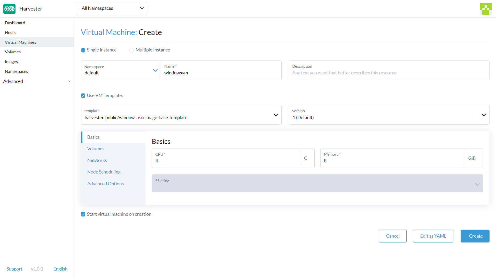
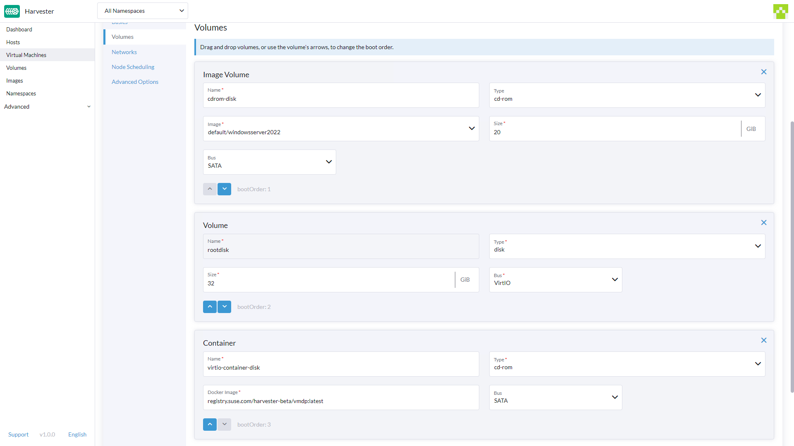
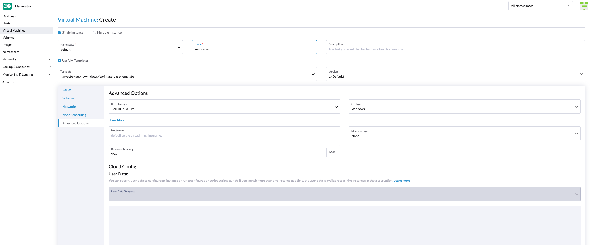
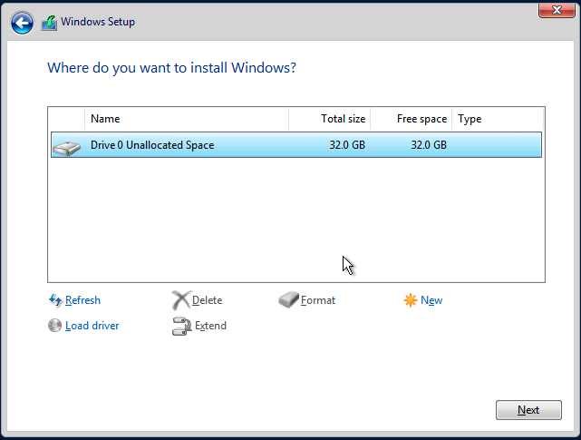

Erstellen Sie eine Windows-virtuelle Maschine.
Erstellen Sie eine oder mehrere virtuelle Maschinen von der Seite Virtuelle Maschinen.
|
Für die Erstellung von Linux-virtuellen Maschinen beachten Sie bitte diese Seite. |
Anleitung: Eine Windows-virtuelle Maschine erstellen
Kopfzeilenabschnitt
-
Erstellen Sie eine einzelne virtuelle Maschineninstanz oder mehrere virtuelle Maschineninstanzen.
-
Legen Sie den Namen der virtuellen Maschine fest.
-
(Optional) Geben Sie eine Beschreibung für die virtuelle Maschine an.
-
(Optional) Wählen Sie die virtuelle Maschinenvorlage
windows-iso-image-base-templateaus. Diese Vorlage fügt ein Volume mit denvirtioTreibern für Windows hinzu.
Grundlagen-Registerkarte
-
Konfigurieren Sie die Anzahl der
CPUKerne, die der virtuellen Maschine zugewiesen sind. -
Konfigurieren Sie die Menge von
Memory, die der virtuellen Maschine zugewiesen ist.

|
Wie oben erwähnt, wird empfohlen, die Windows-virtuelle Maschinenvorlage zu verwenden. Der |
|
Die |
Volumes-Registerkarte
-
Das erstes Volume ist ein
Image Volumemit den folgenden Werten:-
Name: Der Wertcdrom-diskist standardmäßig festgelegt. Sie können ihn beibehalten oder ändern. -
Type: Auswählencd-rom. -
Image: Wählen Sie das Windows-Image aus, das installiert werden soll. Siehe Upload Images für die vollständige Beschreibung, wie neue Images erstellt werden. -
Size: Der Wert20ist standardmäßig festgelegt. Sie können es ändern, wenn Ihr Image eine größere Größe hat. -
Bus: Der WertSATAist standardmäßig festgelegt. Es wird empfohlen, dass Sie es nicht ändern.
-
-
Das zweites Volume ist ein
Volumemit den folgenden Werten:-
Name: Der Wertrootdiskist standardmäßig festgelegt. Sie können ihn beibehalten oder ändern. -
Type: Auswählendisk. -
StorageClass: Sie können die Standard-StorageClassharvester-longhornverwenden oder eine benutzerdefinierte angeben. -
Size: Der Wert32ist standardmäßig festgelegt. Siehe die Anforderungen an den Speicherplatz für Windows Server und Windows 11, bevor Sie diesen Wert ändern. -
Bus: Der WertVirtIOist standardmäßig festgelegt. Sie können ihn beibehalten oder auf die anderen verfügbaren OptionenSATAoderSCSIändern.
-
-
Das drittes Volume ist ein
Containermit den folgenden Werten:-
Name: Der Wertvirtio-container-diskist standardmäßig festgelegt. Sie können ihn beibehalten oder ändern. -
Type: Auswählencd-rom. -
Docker Image: Der Wertregistry.suse.com/suse/vmdp/vmdp:2.5.4.2ist standardmäßig festgelegt. Wir empfehlen, diesen Wert nicht zu ändern. -
Bus: Der WertSATAist standardmäßig festgelegt. Wir empfehlen, diesen Wert nicht zu ändern.
-
-
Sie können zusätzliche Festplatten mit den Schaltflächen
Add Volume,Add Existing Volume,Add VM ImageoderAdd Containerhinzufügen.

Netzwerk-Registerkarte
-
Das Management-Netzwerk wird standardmäßig mit den folgenden Werten hinzugefügt:
-
Name: Der Wertdefaultist standardmäßig festgelegt. Sie können ihn beibehalten oder ändern. -
Model: Der Werte1000ist standardmäßig festgelegt. Sie können es beibehalten oder auf die anderen verfügbaren Optionen aus dem Dropdown-Menü ändern. -
Network: Der Wertmanagement Networkist standardmäßig festgelegt. Sie können diese Option nicht ändern, wenn kein anderes Netzwerk erstellt wurde. Siehe VM-Netzwerk für die vollständige Beschreibung, wie neue Netzwerke erstellt werden. -
Type: Der Wertmasqueradeist standardmäßig festgelegt. Sie können es beibehalten oder auf die andere verfügbare Optionbridgeändern.
-
-
Sie können zusätzliche Netzwerke hinzufügen, indem Sie auf
Add Networkklicken.

|
Die Änderung der |
Registerkarte zur Knotenplanung
-
Node Schedulingist standardmäßig aufRun VM on any available nodeeingestellt. Sie können es beibehalten oder auf die anderen verfügbaren Optionen aus dem Dropdown-Menü ändern.

Registerkarte für erweiterte Optionen
-
OS Type: Der WertWindowsist standardmäßig festgelegt. Es wird empfohlen, dass Sie es nicht ändern. -
Machine Type: Der WertNoneist standardmäßig festgelegt. Es wird empfohlen, dass Sie es nicht ändern. Siehe die Dokumentation zu KubeVirt Machine Type, bevor Sie diesen Wert ändern. -
(Optional)
Hostname: Legen Sie den Hostnamen der virtuellen Maschine fest. -
(Optional)
Cloud Config: SowohlUser Dataals auchNetwork DataWerte sind mit Standardwerten eingestellt. Derzeit werden diese Konfigurationen nicht auf Windows-basierten virtuellen Maschinen angewendet. -
(Optional)
Enable TPM,Booting in EFI mode,Secure Boot: Sowohl das TPM 2.0-Gerät als auch die UEFI-Firmware mit Secure Boot sind zwingende Anforderungen für Windows 11.
|
Derzeit werden nur nicht persistente vTPMs unterstützt, und ihr Zustand wird nach jedem Herunterfahren der virtuellen Maschine gelöscht. Daher sollte Bitlocker nicht aktiviert werden. |

Fußzeilenabschnitt
Sobald alle Einstellungen vorgenommen wurden, klicken Sie auf Create.
|
Wenn Sie erweiterte Einstellungen hinzufügen müssen, können Sie die Konfiguration der virtuellen Maschine direkt bearbeiten, indem Sie auf |
Installation von Windows
-
Wählen Sie die gerade erstellte virtuelle Maschine aus und klicken Sie auf
Start. -
Starten Sie den Installer und folgen Sie den Anweisungen des Installers.
-
(Optional) Wenn Sie
virtio-basierte Volumes verwenden, müssen Sie den spezifischen Treiber laden, damit der Installer diese erkennen kann. Wenn Sie die virtuelle Maschinenvorlagewindows-iso-image-base-templateverwenden, lautet die Anweisung wie folgt:-
Klicken Sie auf
Load driver, und dann im Dialogfeld aufBrowseund suchen Sie ein CD-ROM-Laufwerk mit dem PräfixVMDP-WIN. Suchen Sie als Nächstes das Treiberverzeichnis entsprechend der Windows-Version, die Sie installieren; zum Beispiel sollte Windows Server 2012r2win8.1-2012r2aufklappen und das Verzeichnispvvxdarin auswählen.
-
Klicken Sie auf
OK, um dem Installationsprogramm zu erlauben, dieses Verzeichnis nach Treibern zu durchsuchen, wählen SieSUSE Block Driver for Windowsund klicken Sie aufNext, um den Treiber zu laden.
-
Warten Sie, bis der Installer den Treiber geladen hat. Wenn Sie die richtige Treiberversion wählen, werden die
virtio-Volumes erkannt, sobald der Treiber geladen ist.
-
-
(Optional) Wenn Sie andere
virtio-basierte Hardware wie einen Netzwerkadapter verwenden, müssen Sie diese Treiber manuell installieren, nachdem die Installation abgeschlossen ist. Um Treiber zu installieren, öffnen Sie den VMDP-Treiberdatenträger und verwenden Sie den Installer basierend auf Ihrer Plattform.
Die Unterstützungsmatrix des VMDP-Treiberpakets für Windows lautet wie folgt (nehmen Sie an, der Pfad des VMDP-CD-ROM-Laufwerks ist E):
| Version | Unterstützt | Treiberpfad |
|---|---|---|
Windows 7 |
Nein |
|
Windows Server 2008 |
Nein |
|
Windows Server 2008r2 |
Nein |
|
Windows 8 x86(x64) |
Ja |
|
Windows Server 2012 x86(x64) |
Ja |
|
Windows 8.1 x86(x64) |
Ja |
|
Windows Server 2012r2 x86(x64) |
Ja |
|
Windows 10 x86(x64) |
Ja |
|
Windows Server 2016 x86(x64) |
Ja |
|
Windows Server 2019 x86(x64) |
Ja |
|
Windows 11 x86(x64) |
Ja |
|
Windows Server 2022 x86(x64) |
Ja |
|
|
Wenn Sie die |
|
Für vollständige Anweisungen zur Installation des VMDP-Gasttreibers und der Tools siehe die Dokumentation unter https://documentation.suse.com/sle-vmdp/2.5/html/vmdp/index.html |
Bekannte Probleme
Windows ISO kann im EFI-Modus nicht booten
Wenn Sie den EFI-Modus mit Windows verwenden, kann es sein, dass das System mit anderen Geräten wie HDD oder UEFI-Shell wie dem untenstehenden gebootet wird:

Das liegt daran, dass Windows eine Press any key to boot from CD or DVD… anzeigt, um den Benutzer entscheiden zu lassen, ob er von der Installations-ISO booten möchte oder nicht, und es menschliches Eingreifen benötigt, um dem System zu erlauben, von CD oder DVD zu booten.

Alternativ, wenn das System bereits in die UEFI-Shell gebootet ist, können Sie reset eingeben, um das System zu zwingen, erneut neu zu starten. Sobald die Eingabeaufforderung erscheint, können Sie eine beliebige Taste drücken, um dem System zu erlauben, von der Windows ISO zu booten.
VM stürzt ab, wenn der reservierte Speicher nicht ausreicht
Es gibt ein bekanntes Problem mit der Windows-virtuellen Maschine, wenn ihr mehr als 8 GiB zugewiesen werden, ohne dass genügend reservierter Speicher konfiguriert ist. Die virtuelle Maschine stürzt ohne Vorwarnung ab.
Dies kann behoben werden, indem mindestens 256 MiB reservierter Speicher für die Vorlage im Tab "Erweiterte Optionen" zugewiesen wird. Wenn 256MiB nicht funktioniert, versuchen Sie 512MiB.

BSoD (Blauer Bildschirm des Todes) beim ersten Bootvorgang von Windows
Es gibt ein bekanntes Problem mit der Windows-virtuellen Maschine, die Windows Server 2016 und höher verwendet; ein BSoD mit dem Fehlercode KMODE_EXCEPTION_NOT_HANDLED kann beim ersten Bootvorgang von Windows auftreten. Wir untersuchen das Problem weiterhin und werden es in der zukünftigen Version beheben.
Als Workaround können Sie die Datei /etc/modprobe.d/kvm.conf innerhalb der Installation von SUSE Virtualization erstellen oder ändern, indem Sie /oem/99_custom.yaml wie folgt aktualisieren:
name: Harvester Configuration
stages:
initramfs:
- commands: # ...
files:
- path: /etc/modprobe.d/kvm.conf
permissions: 384
owner: 0
group: 0
content: |
options kvm ignore_msrs=1
encoding: ""
ownerstring: ""
# ...|
Dies ist weiterhin eine experimentelle Lösung. Für weitere Informationen verweisen Sie bitte auf dieses Problem und lassen Sie uns bitte wissen, ob Sie nach der Anwendung dieses Workarounds auf Probleme gestoßen sind. |